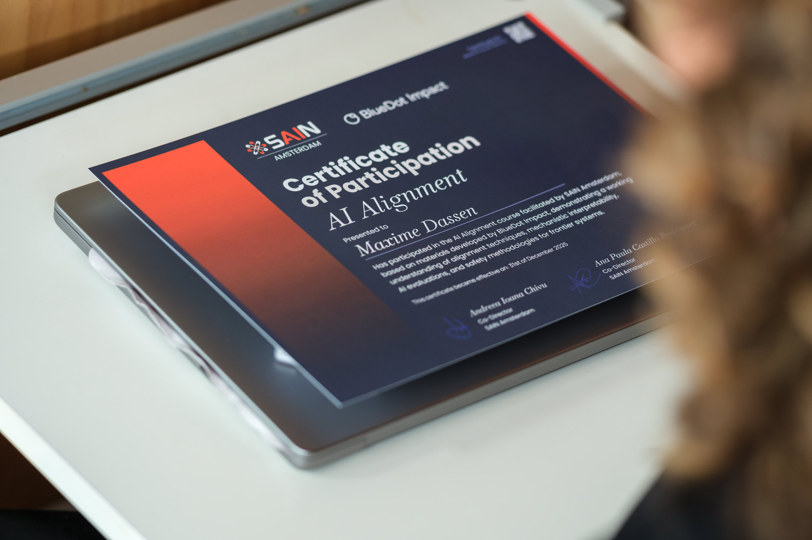
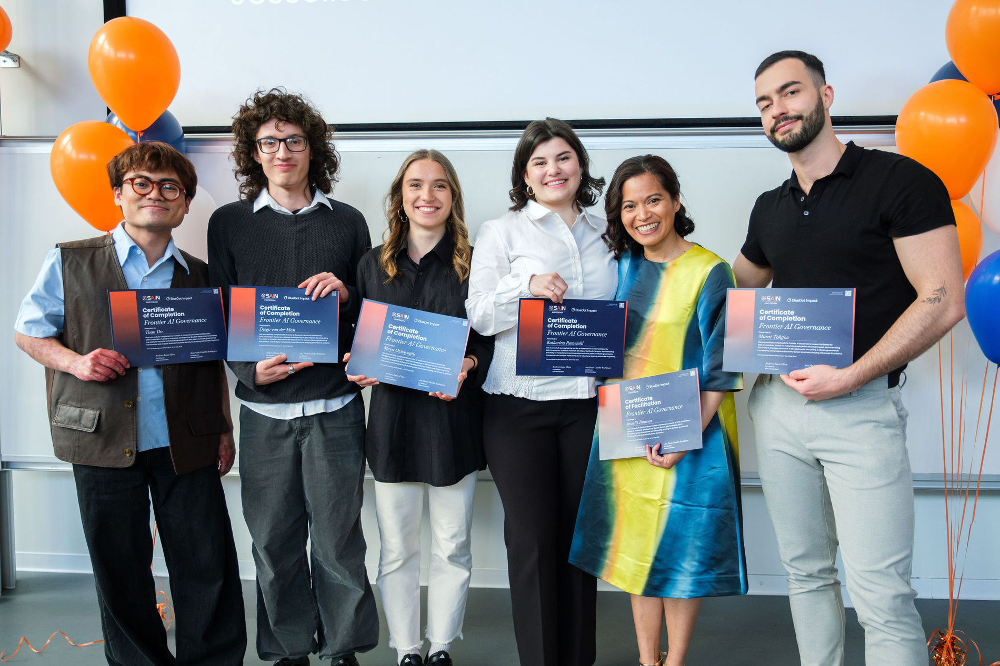
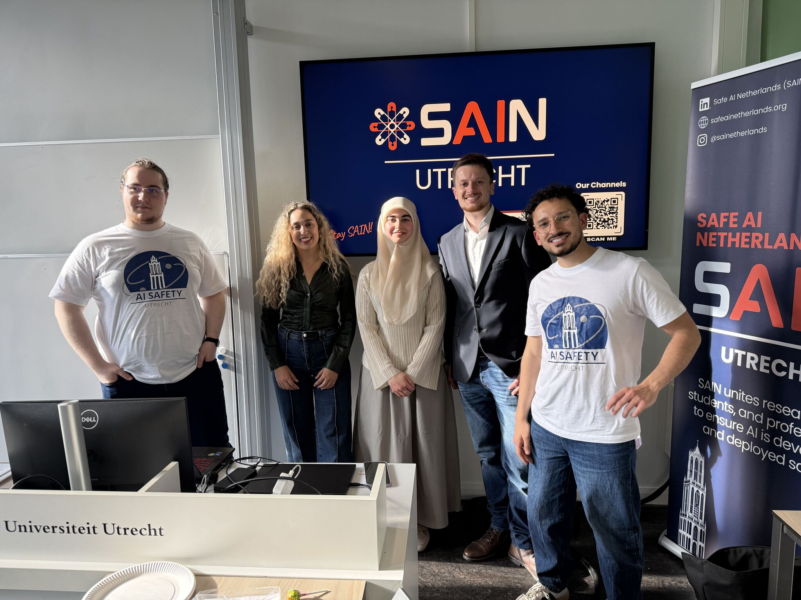
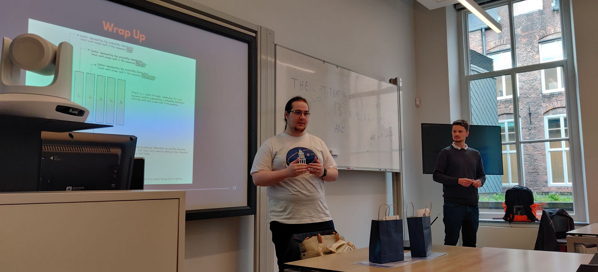
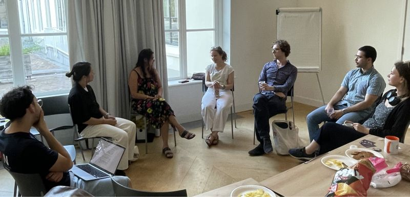
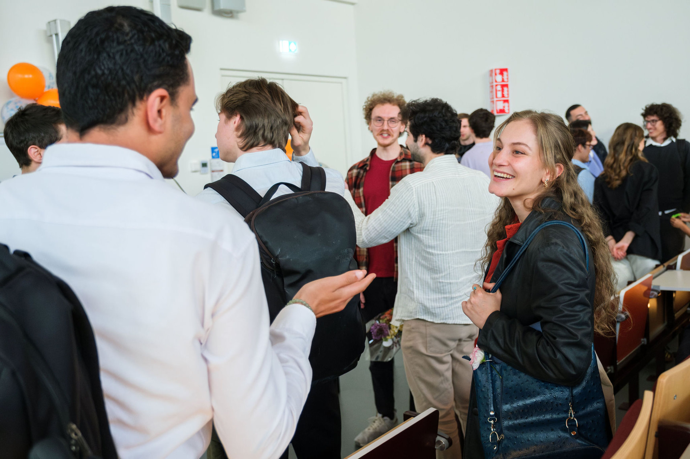
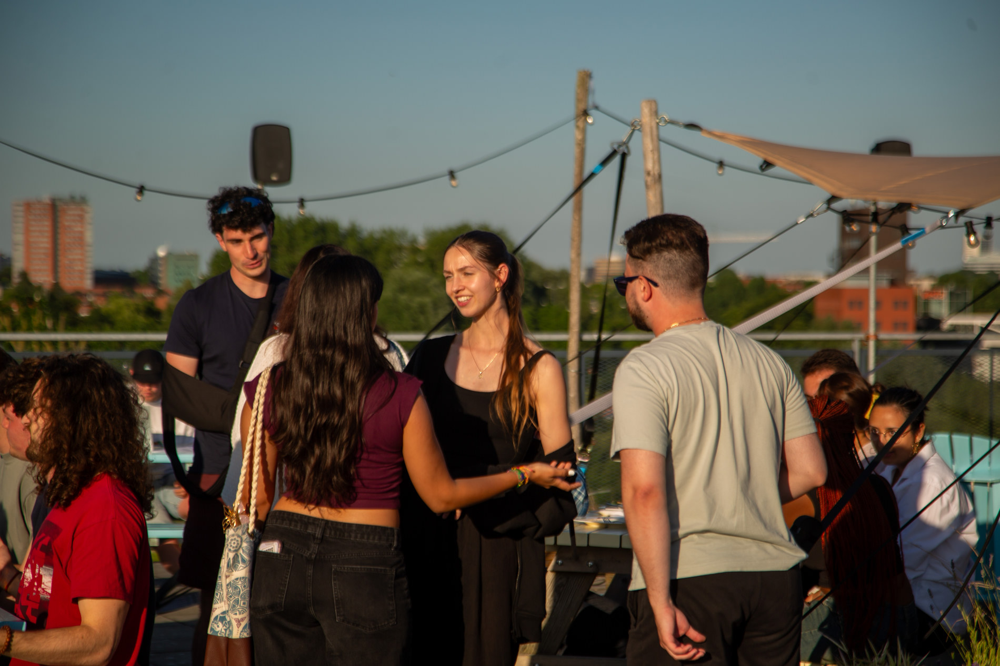
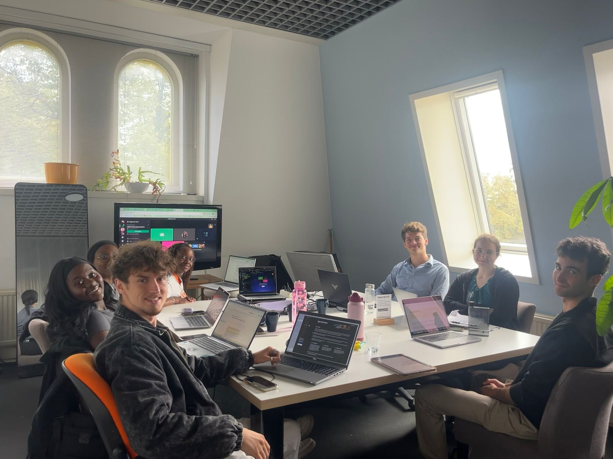

Utrecht
Fundamentals, ARENA track, discussion groups
View coursesWe are hiring
See open positionsSafe AI Netherlands
AI Safety expertise has never been more important than today. SAIN provides the community, courses and resources to help students and professionals join the AI Safety field. We provide a clear path through education, community and practical projects, then connect strong contributors to the organisations, programmes and roles where they can take the next step.
Local chapters
Fundamentals, ARENA track, discussion groups
View coursesTechnical and governance tracks
View coursesBlueDot technical and governance courses
View coursesLearn about AI Safety from experts working at the frontier. SAIN’s courses, research hub, and community give you a clear way in, whether you’re curious or aiming for a career.
The goal is simple: help students and young professionals make a first real contribution. Then we connect the strongest people onward to organisations, programmes, and jobs. That’s the SAIN Talent Pipeline.
Join a free course
Participate in SAIN's community
Contribute and collaborate on research or projects

Undertake a fellowship or internship in AI Safety

Work full-time in AI Safety
Pick a track. Every programme is free and taught in person. What you join, and how it runs, depends on the chapter.
6 weeks ~60 min Drop in any week
A weekly series on risks, technical safety and governance, taught so newcomers can drop in. Three editions in Utrecht have reached more than 100 students, researchers, engineers and public-sector people.
Weekly themes
Where you can attend

Cohort graduation · SAIN Utrecht
4–6 weeks On-site Curriculum differs by city
Each chapter runs a technical track, with a different curriculum. Utrecht teaches from ARENA. Groningen uses the Center for AI Safety course. Amsterdam uses BlueDot.
Utrecht ARENA
Where you can attend

Week 1 · Transformers and interpretability
By city Course or discussion group See your chapter
Amsterdam runs BlueDot Frontier AI Governance. Groningen runs the governance track of AI Safety, Ethics, and Society. Utrecht hosts a weekly AI Governance & Policy discussion group. Facilitators include researchers, risk consultants, and public-sector people.
Six-week courses (Groningen and Amsterdam)
Where you can attend

Discussion group · Utrecht
Community
Weekly sessions, hackathons, and the evenings after. People find friends here, collaborators, and often the next step in AI Safety. That network is not an extra — it is a central part of the organisation.



A national programme that matches researchers with PhD+ supervisors, and supports open collaboration. Open to students, researchers, and people with no formal affiliation, from every chapter. Apply at any time.
Read the call for applicationsOutput
Researchers in the hub have published at NeurIPS and ICLR. SAIN helps with submissions and presentations. The list below is the current backlog.
6+ active projects 20+ researchers 12+ publications
Each title opens the paper in a new tab.
Careers
Most people who end up working on AI Safety did not plan for it. We shorten that path with mentorship, funding advice, and introductions to the labs, institutes and ministries hiring in Europe right now.
See open positionsInternship · Existential Risk Observatory
“Without this community I almost certainly wouldn't be where I am.”
Interpretability, evaluations and control research at labs and institutes.
Labs and institutes
Advising ministries, regulators and standards bodies on frontier AI.
Public sector
Running programmes, chapters and communications for the Dutch ecosystem.
Community
Model security, compute governance and assurance engineering.
Industry
Get involved
Every SAIN programme is free and run by volunteers. Start with a course, or write to us about helping run one.
Join a free course
Participate in SAIN's community
Contribute and collaborate on research or projects
Undertake a fellowship or internship in AI Safety
Work full-time in AI Safety